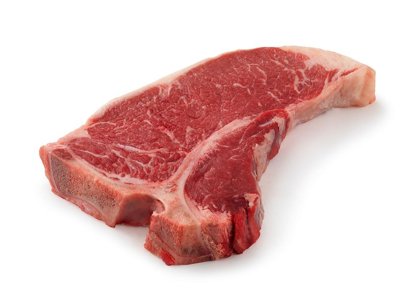

<!doctype html>
<html class="no-js" lang="en">

<head>
  <meta charset="utf-8">
  <title>Responsive Layouts</title>
  <meta name="description" content="This site will serve as the hub for many sub responsive layouts">
  <meta name="viewport" content="width=device-width, initial-scale=1">

  <meta property="og:title" content="">
  <meta property="og:type" content="">
  <meta property="og:url" content="">
  <meta property="og:image" content="">

  <link rel="manifest" href="site.webmanifest">
  <link rel="apple-touch-icon" href="icon.png">
  <!-- Place favicon.ico in the root directory -->

  <link rel="stylesheet" href="../css/normalize.css">
  <link rel="stylesheet" href="../css/main.css">

  <meta name="theme-color" content="#fafafa">
</head>

<body>
  <div class="header-main-footer-demo-container">
    <header class="header-main-footer-header">
      <div class="header-main-footer-header-wrapper">
        
        <nav>
          <a href="">link 1</a>
          <a href="">link 2</a>
          <a href="">link 3</a>
        </nav>
      </div>
    </header>
    <main class="header-main-footer-main">main</main>
    <footer class="header-main-footer-footer">footer</footer>
  </div>
</body>

</html>
